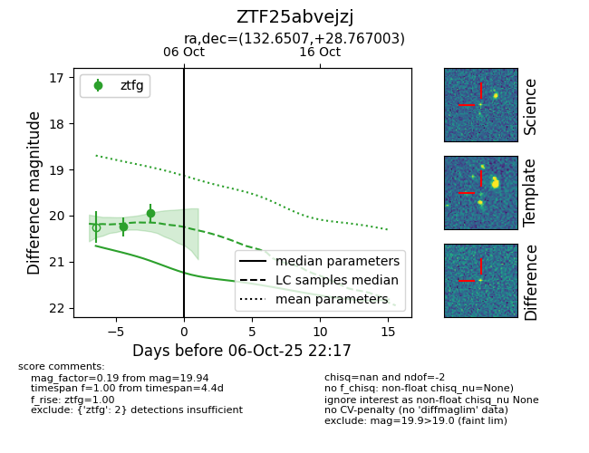
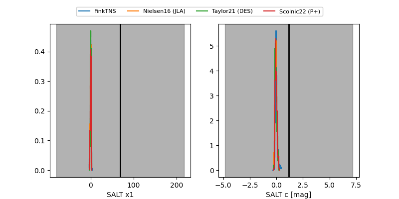

FINK: ZTF25abvejzj
Lasair: ZTF25abvejzj
ALeRCE: ZTF25abvejzj
ZTF25abvejzj (ztf,fink)
equatorial (ra, dec) = (132.6507,+28.76700)
galactic (l, b) = (196.1295,+37.37664)


last ztfg=19.94
2 ztfg detections